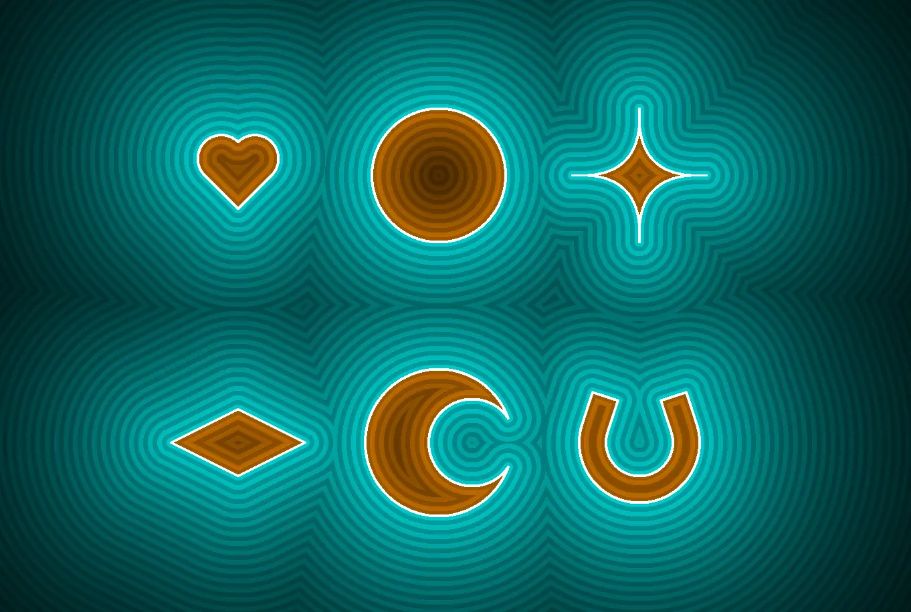

An Introduction to Ray Marching
3.23.2023This write up is under construction, come back soon for more :) See the code here: https://github.com/usedhondacivic/ThreeJS-Raymarcher
Warning: Some demos on this page are graphically demanding. I recommend enabling GPU acceleration for your web browser for the best experience.
Click and drag to rotate, scroll to zoom, right click to pan.
What is Ray Marching?
You might be familiar with ray tracing, ray marching’s better known cousin. Ray tracing is a rendering process that uses math to simulate light bouncing around a scene before entering the camera. By computing the path light takes to enter each pixel of the screen, we can determine the color of that pixel based on material properties and lighting. For a simple one file demo of ray tracing, check out my Javascript implementation.
Ray tracing gives stunning results, but is exceptionally computationally expensive. The main issue lies in the time complexity of ray intersection math, which must be performed many times for each pixel.
Ray marching follows the same concept as ray tracing (following rays through space), but lowers the load through some computational cleverness.
I'll first walk through the theoretical basis for ray marching before finishing the article talking about my implementation.
Signed Distance Fields (SDFs)
If computing exact ray-world intersections is too costly, what are our options? Ray marching uses an iterative approach based on Signed Distance Fields (SDFs). Instead of computing an exact intersection, the ray marching algorithm queries the lowest distance between a point and any location on an object. Outside of the object this value is > 0, inside it is < 0, and it is equal to 0 on the border.

An example of signed distance fields for various shapes
Once we know the minimum distance to an object, we can safely step along any ray by that amount and not risk intersecting it. Stepping along the ray yields a new point, from which we can find a new minimum distance, step along the ray once more, and repeat.
The demo below shows the ray marching process for one ray sweeping a 2D scene. Each blue dot represents the end of one "step", and each ring shows the minimum distance from that point to the scene. Once the distance to the scene is below a threshold, we say we have hit the object and return.
SDFs are remarkably efficient, even for many shapes that appear complicated at first glance. Check out Inigo Quilez's site giving SDFs for a huge number of primitives.
Combining SDFs
One useful feature of SDF's is how simple they are to combine. The simplest operation is a union, which represents the area inside of either of two shapes. We can find the union of two SDF's by taking the minimum of their two distance fields. This makes sense intuitively as we only care about the minimum distance to any object in the scene.
function union(x,y){
return min(rectangle.sdf(x, y), circle.sdf(x, y))
}
We can also find the intersection of two shapes, defined as the shared area or overlap. In terms of SDFs, we want the area where the SDF of both shapes is < 0. We can find this by taking the max of the two.
function intersect(x,y){
return max(rectangle.sdf(x, y), circle.sdf(x, y));
}
Finally, we can subtract one shape from another. This comes curtesy of the "signed" part of SDF. A signed distance field is positive outside the shape and negative inside of the shape. By negating the SDF of a shape we can turn it inside out. Taking the intersection of an inside-out shape with another primitive is equivalent to subtracting the first from the second.
function subtract(x,y){
return max(rectangle.sdf(x, y), -circle.sdf(x, y));
}
You can see all three operations in the demo below.
Another popular and immensely satisfying method is to interpolate between SDFs. This gives the effect of melting the primitives together, and is called a smooth union.
The code to achieve a smooth union is simple and shown below (courtesy of Inigo Quilez).
float opSmoothUnion( float d1, float d2, float k ) {
float h = clamp( 0.5 + 0.5*(d2-d1)/k, 0.0, 1.0 );
return mix( d2, d1, h ) - k*h*(1.0-h);
}
This implementation is a polynomial interpolation, with the "roundness" of the union controlled by factor k.
This also works in 3D of course, as shown below.
insert demo
Infinite Repetition
With a ray tracer, intersections with each primitive in the scene must be independently calculated. This scales poorly with dense scenes (ie a field of blades of grass). With ray marching this problem can be trivialized using domain repetition.
Each step of the ray marching process calculates the distance to the scene from some point, lets call it (x,y). In the language of SDF's, "repeating a shape" really means that the SDF of the shape is the same at two positions. A simple way of doing this is using the modulo operation. Replacing (x,y) with (x % 5,y % 5) causes the domain of the SDF to repeat every 5 units in the x and y direction, replicating the SDF infinitely. Modulo is computationally cheap, so these shapes come only at the cost of the increase of ray marching steps.
insert demo
Ambient Occlusion and Glow
Ambient occlusion refers to the effect that ambient light has on the shading of a scene. Parts of a scene that are more exposed (less occluded) tend to get brighter due to light bounced from other objects. Similarly, details and crevices are less exposed (more occluded) and therefore get less ambient lighting. Calculating the reflections of ambient light in the scene is extremely expensive using ray tracing methods, but ray marching offers a computationally "free" alternative. We are already keeping track of the number of iterations the ray takes to march to the object, and it turns out this number is a good estimate of the occlusion of the pixel. A higher number of iterations means that the ray passed closely by objects during its travel. We can use this as a metric of occlusion while shading to get a remarkably realistic approximation of "true" ambient occlusion.
insert demo
Fractal Distance Fields
Many fractals have efficient approximations to their distance fields, allowing them to be rendered in real time. The derivation is beyond the scope of this article (see the references below for more info), but the results are too mesmerizing to not feature in this writeup.
insert demo
We can also generate our own fractals through clever use of domain repetition and transformations of SDFs.
insert demo
My Implementation
One popular tool for experimenting with shaders is Shadertoy, a website that allows you to write, play with, and share shaders with minimal setup time. I highly recommend this route if you care primarily about making cool stuff quickly. I wanted to gain a deeper understanding of the underlying technologies and be able to embed my work into other applications, so I setup my own stack.
I first attempted the purist approach of a C++ implementation using OpenGL through the GLFW3 and GLAD libraries. This is the most performant solution but comes with the downside of having to recompile the code each time I tweaked the shader. This could be solved using some kind of live reload functionality, but I decided it wasn't worth the time to try and solve. Additionally, it would be difficult to display the results on this website. My work in this direction is linked in the "More Resources" section below if you'd like to give it a try.
Instead I turned to the popular Javascript graphics library Three.js. Three has a boat load of awesome functionalities, including WebGL support. WebGL is, as you might have guessed, a browser based implementation of OpenGL, allowing me to render my shaders directly to a <canvas> element.
Using Three.js and GLSL
explain fragment and vertex shaders
Pixel Shaders
A ray marching is a function called on each pixel of the display, so therefore we want a fragment corresponding to every location in the viewport. I achieved this by generating a plane of size (2, 2) and centering it on the x, y plane. I then applied a vertex shader that maps the real-world coordinates of the planes mesh into viewport coordinates. Because viewport coordinates range from -1 to 1, this causes the plane to cover the whole viewport. Here is the code for the plane and for the vertex shader:
insert code
Note that the vertex shader is independent of camera position, so the plane will cover the viewport no matter what. We can reintegrate the camera information into the fragment shader to allow use of Three's camera controls.
insert code
Here is the full code for a simple ray marched sphere with camera controls. As you can see, it's not as intimidating as the online literature often makes it seem:
insert code
insert demo
Conclusion
And that sums up my experiences learning about ray marching. This is neither the most rigorous nor in depth explanation of the techniques, but is meant as a way to promote interest in this powerful and elegant algorithm. I also got to show off some pretty visualizations along the way, which is always a plus. The following resources were invaluable to my learning, and are a great starting point for someone interested in developing their own code. Thanks for reading!
More Resources
All of the code for my ray marching setup + the code for these demos are on my github: https://github.com/usedhondacivic/ThreeJS-Raymarcher
Here is the code for my C++ ray marcher implementation: https://github.com/usedhondacivic/Cpp-raymarcher/blob/master/source/Main.cpp
Inigo Quilez is the worlds foremost authority in ray marching and computer graphics as a whole. His website is one of the most impressive collections of work I have ever seen, and is a must read for anyone interested in math or programming. Find it here: https://iquilezles.org/
I also enjoyed this tutorial from Jamie Wong, which builds into the concepts nicely: https://jamie-wong.com/2016/07/15/ray-marching-signed-distance-functions/
Learning GLSL has a bit of a steep learning curve, but this website helped a lot: https://learnopengl.com/Getting-started/Shaders
insert reference for fractal distance field derivation